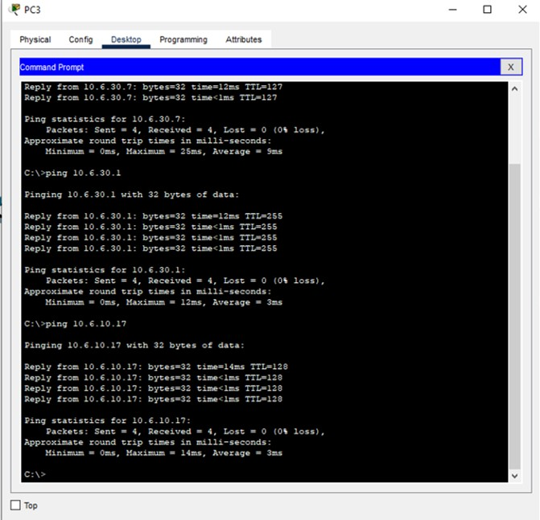

LABORATORIO 2
Cableado Estructurado
Carlos Farouk Abdalá Rincón
Gabriel David Jimenez Mosquera
Julián Felipe Pulido Castro
1. Monte la topología lógica en la sala de redes emulado (topología física) en CISCO Packet Tracer. Utilice los modelos de Switch CISCO Serie 2960 y Router Cisco 2811.
2. Realice la configuración básica de los switches y router CISCO de acuerdo con el procedimiento o lista de pasos propuestos en las lecturas recomendadas. Asigne manualmente a cada una de las interfaces de red las direcciones IP mostradas en la Tabla 1 (Donde X es su número de grupo de trabajo. Revisar la sección de Anexo). Considere el módulo 0 para las interfaces FastEthernet de los switches.
3. Verifique que se haya asignado correctamente las direcciones IP a cada una de las interfaces NIC de los PCs. ¿Qué comando TCP/IP debe utilizar? Capture la verificación realizada.
Para reconocer las direcciones ip de cada computador es necesario entrar en la pestaña de Desktop, y luego entrar a Command prompt, y digitar el comando ipconfig, donde veremos la configuración que actualmente esta corriendo el computador correspondiente, con eso verificaremos la direccion ip asignada. Aquí se puede observar las direcciones ip de cada computador:
4. Cree y configure las VLANs de acuerdo con el procedimiento desarrollado en clase y según la asignación de VLAN mostrada en la Tabla 2.
Para configurar las redes vlan se debe configurar por separado cada Swicht, y se crean las Vlan's, separando los puertos Ethernet según la necesidad dada.
5. Verifique que se hayan creado y configurado correctamente las VLANs. ¿Qué comando CISCO debe utilizar? Capture la verificación realizada.
Por medio de estas capturas se pueden verificar las Vlan's programadas en cada Swicht:
6. Verifique que haya conectividad entre las PCs pertenecientes a la misma VLAN. ¿Qué comandos TCP/IP debe utilizar? ¿Los PCs tienen conectividad con su puerta de enlace? ¿Por qué? ¿Existe conectividad entre PCs pertenecientes a VLAN distintas? ¿Por qué? Capture la verificación realizada.
Para ver si tenemos conectividad entre los PCs pertenecientes a la misma VLAN utilizamos el comando ping junto a la dirección IP del otro PC de la misma VLAN en este caso el 6:

Además, si se tiene conexión con la puerta de enlace porque el pc necesita que este le permita el acceso a la otra red y funciona como un enlace entre los dos.
También, existe conexión entre VLAN’s distintas ya que existe la conexión entre el Switch raíz y el Router que permite la comunicación de datos.
7. Si en el punto 6 encuentra problema(s) de conectividad, proponga y configure una solución al problema(s) identificado(s). Realice nuevamente las pruebas de conectividad para verificar su configuración. Capture la verificación realizada.
No se encontró ningún tipo de dificultad en la realización del punto 6. Todas las conexiones esperadas, se establecieron de manera apropiada.
8. Verifique que el protocolo STP esté configurado. ¿Qué comando CISCO debe utilizar? ¿Cuál Switch fue asignado como puente raíz? ¿Por qué? Capture la verificación realizada.
La conectividad del protocolo STP se comprueba a través del comando show spannig-tree en el switch asignado como puente raíz. Que en este caso es el 1 ya que es el que genera menor costo BID (bridge ID), en el BID hay dos características, la primera es una prioridad la cual todos los switches traen la misma por defecto y una dirección MAC que es la que marca la diferencia. Para esta red el switch con la menor dirección MAC es el 1 y por tanto el puente raíz.
9. Verifique que sea posible hacer Telnet desde un PC a los demás switches y al router R1. ¿Qué comando TCP/IP debe utilizar? Capture la verificación realizada.
El comando utilizado para este ejercicio fue el telnet en la consola de comandos del PC para cada uno de los dispositvos usados.
10. Analice el tráfico generado en la LAN al verificar la conectividad de un PC a otro y de un PC al gateway. Adicionalmente, entre dos PCs pertenecientes a VLANs distintas. Justifique su análisis utilizando capturas con el simulador de Cisco Packet Tracer (vista simulación).
Del PC-1 al PC-6, de una Vlan a la otra. Para probar la conectividad entre un PC y otro PC, primeramente realizamos el comando de ping entre el PC-1 y el PC-6 que son de Vlans distintas, como el resultado de ping es positivo, y se reciben los 4 paquetes podemos afirmar que el paquete es enviado hasta el router, por lo que se considera que pertenecen a redes distintas.
Desafíos que se Presentaron Durante el Desarrollo
Los principales desafíos encontrados fueron las configuraciones de los switches, ya que esta puede ser la parte mas importante de todo el desarrollo de la tipología solicitada, sin una adecuada programación de los switches, no servirán aspectos como: las vlans, el protocolo STP, entre otros que permiten el funcionamiento de la red.
Conclusiones del Laboratorio
Durante el desarrollo del laboratorio se comprendió lo necesario que es la creación de las subredes vlans, ya que estas permiten la regulación del tráfico según la red de la cual hace parte, permitiendo así también la creación de las distintas redes que se puedan necesitar, por ejemplo, en una oficina. De igual manera se observó el proceso que siguen un router cuando tiene que interconectar dos de estas subredes, en estos casos el router actúa como si se estuviera conectando una red local a un externa. También se verifico la importancia del protocolo STP, el cual debido a la topología utilizada durante el desarrollo era precisamente importante, ya que al momento de contactar con una vlan distinta, se utilizaban por lo menos 2 switches, lo cual podía generar una tormenta, pero ya que el protocolo STP estaba activo siempre se asignaba un puente raíz.
Referencias
[1] "Protocolo de árbol de expansión, Spanning Tree Protocol (STP) - Tajamar Tech Riders". Tajamar Tech Riders. https://techclub.tajamar.es/protocolo-de-arbol-de-expansion-spanning-tree-protocol-stp/.
[2]Llorca Alcón, Manuel. "Configuración de una VLAN mediante Switches CISCO". RiuNet repositorio UPV. https://riunet.upv.es/handle/10251/1424?tl=a (accedido el 23 de septiembre de 2022).
[3]"Cómo configurar un switch de red para su empresa en 6 pasos". Cisco. https://www.cisco.com/c/es_mx/solutions/small-business/resource-center/networking/how-to-setup-network-switch.html (accedido el 23 de septiembre de 2022).
[4]Cisco, "Networking Essentials. Module Group 5."
[5]Juan M. Aranda, “Basic configuration”, Slides.